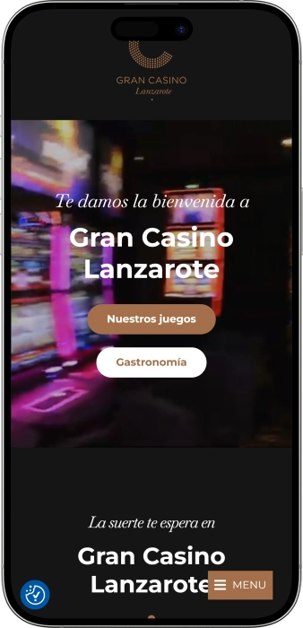

Oferta exclusiva de bienvenida de
Oferta exclusiva de bienvenida de
Casino Exclusivo en Lanzarote con Vistas al Atlántico
Los mejores casinos
Detalles de bonificación
Casino
Bonos
Rate
Giros gratis
Más info
Conseguir
Ventajas
- ¿Buscas experiencia auténtica de casino en las Islas Canarias? En Casino de Lanzarote combinamos emoción del juego con hospitalidad mediterránea y vistas espectaculares al océano. Descubre nuestras ventajas:
-
Más de 100 máquinas tragaperras con modelos exclusivos y últimas novedades del sector
-
Mesas de póker profesionales y torneos de alto nivel para jugadores experimentados
-
Ubicación privilegiada en Puerto del Carmen con acceso directo desde zona hotelera
-
Restaurante Volcán Corona con gastronomía canaria y terraza con vistas al Atlántico
-
Operado por Grupo Orenes, líder en gaming con licencia oficial de juego en España
-
Ambiente seguro con política de juego responsable y atención personalizada 24/7
- Únete a miles de visitantes que eligen Casino de Lanzarote para disfrutar de entretenimiento premium en ambiente cálido y acogedor. Nuestro equipo está siempre disponible para garantizar tu mejor experiencia.
Gran Casino Lanzarote App


Sobre Casino de Lanzarote
Casino de Lanzarote se ha consolidado como referente del entretenimiento en las Islas Canarias. Nuestra pasión por ofrecer experiencias únicas nos convierte en destino preferido de turistas y residentes que buscan diversión de calidad en entorno privilegiado.
- Ampliación de sala de juegos con más de 100 máquinas tragaperras modernas
- Inauguración de mesas de póker profesionales y torneos mensuales
- Apertura de Restaurante Volcán Corona con cocina de autor canaria
- Reconocimiento por excelencia en atención al cliente y juego responsable
Operamos bajo estricta regulación española de juego con certificaciones de seguridad. Todas nuestras máquinas cumplen normativas oficiales y son auditadas regularmente. Tu seguridad y privacidad son nuestra máxima prioridad con protocolos avanzados. Continuamos innovando con nuevos juegos, eventos temáticos mensuales y mejoras en nuestras instalaciones. Visitamos y descubre por qué somos la opción número uno en entretenimiento nocturno de Lanzarote con vistas incomparables al Atlántico.
Guía Completa de Juegos de Casino en Lanzarote
Descubre la Variedad de Juegos en Casino de Lanzarote
Casino de Lanzarote ofrece una experiencia de juego incomparable en las Islas Canarias, combinando la emoción de las apuestas con el encanto mediterráneo de Puerto del Carmen. Nuestra selección de más de 100 máquinas tragaperras y mesas de juego profesionales garantiza entretenimiento para todos los gustos y niveles de experiencia. Desde jugadores principiantes hasta profesionales experimentados, cada visitante encuentra su juego ideal en nuestras instalaciones modernas y acogedoras con vistas espectaculares al océano Atlántico.
La ubicación estratégica en el corazón turístico de la isla permite combinar sesiones de juego con experiencias gastronómicas en nuestro restaurante Volcán Corona, donde la cocina canaria de autor se fusiona con sabores internacionales. El ambiente del casino refleja la hospitalidad canaria, creando atmósfera relajada pero emocionante que distingue nuestra propuesta de entretenimiento. Operados por Grupo Orenes, garantizamos estándares máximos de calidad, seguridad y transparencia en cada partida.
Máquinas Tragaperras: Tecnología y Variedad
Nuestra sala de máquinas tragaperras representa la mayor colección de slots en Lanzarote, con modelos que abarcan desde clásicos tradicionales hasta las últimas innovaciones tecnológicas del sector gaming. Cada máquina está cuidadosamente seleccionada para ofrecer experiencias únicas, con gráficos de alta definición, efectos sonoros envolventes y mecánicas de juego innovadoras que mantienen la emoción en cada giro. Los porcentajes de retorno están certificados y auditados regularmente, garantizando transparencia total para nuestros jugadores.
La distribución de las máquinas en nuestra sala permite crear zonas diferenciadas según preferencias de apuesta. Encontrarás desde slots de baja denominación perfectas para sesiones prolongadas de entretenimiento, hasta máquinas de alto límite diseñadas para jugadores que buscan emociones intensas y premios significativos. Nuestro personal técnico garantiza mantenimiento constante, asegurando funcionamiento óptimo y actualizaciones regulares del catálogo de juegos disponibles.
- Slots Clásicas: Máquinas tradicionales de tres rodillos con símbolos icónicos como frutas, campanas y sietes. Ideales para jugadores que aprecian la simplicidad y nostalgia del casino tradicional con mecánicas directas y premios instantáneos.
- Video Slots Modernas: Tragaperras de cinco rodillos con múltiples líneas de pago, funciones bonus elaboradas, rondas de giros gratis y multiplicadores progresivos. Temáticas variadas desde aventuras épicas hasta franquicias populares.
- Jackpots Progresivos: Máquinas conectadas en red que acumulan premios mayores crecientes. Cada apuesta contribuye al bote común, creando oportunidades de ganancias que pueden cambiar vidas con un solo giro afortunado.
- Slots Temáticas Premium: Juegos con licencias oficiales de películas, series televisivas y personajes famosos. Experiencias inmersivas con cinemáticas de calidad y bandas sonoras originales que transportan a universos de entretenimiento únicos.
- Máquinas Multijuego: Terminales versátiles que permiten alternar entre diferentes tipos de slots sin cambiar de posición. Perfectas para jugadores que disfrutan variando su experiencia durante la misma sesión de juego en el casino.
Mesas de Póker: Torneos y Partidas Cash
El área de póker de Casino de Lanzarote está diseñada para satisfacer tanto a jugadores recreativos como a competidores serios que buscan desafíos de alto nivel. Nuestras mesas profesionales cuentan con superficie de fieltro premium, sistemas automáticos de barajado y fichas de calidad casino que garantizan experiencia auténtica. La sala está climatizada y acústicamente aislada para crear ambiente concentrado donde la estrategia y habilidad determinan los resultados.
Organizamos torneos mensuales con estructuras variadas que se adaptan a diferentes bankrolls y niveles de experiencia. Desde eventos recreativos con buy-ins accesibles hasta competiciones de mayor prestigio que atraen jugadores de toda España y Europa. Nuestro calendario de torneos se actualiza regularmente, ofreciendo formatos como Texas Hold'em, Omaha y modalidades mixtas que ponen a prueba la versatilidad de los participantes.
- Texas Hold'em Cash Games: Mesas permanentes con diferentes límites de apuesta, desde micro stakes hasta high stakes. Entra y sal cuando desees con total flexibilidad, controlando siempre tu inversión y tiempo de juego según preferencias personales.
- Torneos Mensuales: Competiciones estructuradas con premios garantizados y distribución equitativa del prize pool. Formatos freeze-out, reentry y shootout que ofrecen dinámicas distintas y oportunidades múltiples de clasificación a eventos mayores.
- Omaha Poker: Variante de cuatro cartas que requiere mayor habilidad táctica y cálculo probabilístico. Perfecta para jugadores experimentados que buscan mayor complejidad estratégica y acción en cada mano distribuida.
- Sit & Go Tournaments: Torneos rápidos que comienzan cuando se completa la mesa, ideales para sesiones cortas. Dinámicas ágiles con estructuras aceleradas de ciegas que garantizan conclusión en tiempos predecibles.
- Poker Escuela: Sesiones formativas gratuitas para principiantes conducidas por dealers profesionales. Aprende reglas básicas, estrategias fundamentales y etiqueta de mesa antes de participar en partidas reales con dinero.
Juegos de Mesa Tradicionales
Además de póker y tragaperras, Casino de Lanzarote ofrece selección de juegos de mesa clásicos que han definido la experiencia de casino durante generaciones. Nuestros crupieres profesionales conducen partidas de ruleta, blackjack y otros juegos tradicionales con profesionalismo impecable, explicando reglas a principiantes y manteniendo ritmo ágil para jugadores experimentados. La atmósfera en las mesas combina tensión emocionante del juego con ambiente social agradable característico de la hospitalidad canaria.
Cada mesa está equipada con tecnología moderna que garantiza transparencia absoluta en cada partida. Sistemas de cámaras de seguridad, chips con protección RFID y procedimientos estandarizados aseguran que cada juego se desarrolle conforme a regulaciones oficiales. Los límites de apuesta varían según mesa, permitiendo acceso tanto a jugadores conservadores como a aquellos que buscan emociones de altas apuestas en ambiente controlado y seguro.
| Asp. | Req. | Notas |
|---|---|---|
| Edad | 18+ | Doc. oficial |
| Docs | DNI/NIE/pas. | Solo original |
| Dress | Smart casual | No playa |
| Horario | Tarde–mad. | Por temp. |
| Entrada | Gratis | Reg. 1ª vez |
| Autoexcl. | Registro | No acceso |
Experiencia Gastronómica en Volcán Corona
El Restaurante Volcán Corona complementa perfectamente la experiencia de casino, ofreciendo cocina de autor que fusiona tradiciones canarias con técnicas culinarias contemporáneas. Ubicado dentro de las instalaciones del casino, permite a los jugadores disfrutar de comidas gourmet sin abandonar el ambiente de entretenimiento. La carta cambia estacionalmente, incorporando ingredientes locales frescos y mariscos del Atlántico que reflejan la riqueza gastronómica de las Islas Canarias.
La terraza del restaurante ofrece vistas panorámicas al océano, creando escenario perfecto para cenas románticas o celebraciones especiales después de sesiones exitosas de juego. El servicio de bar opera continuamente, ofreciendo cócteles premium, vinos selectos de denominaciones españolas y opciones internacionales que satisfacen paladares exigentes. La combinación de gastronomía excepcional y ambiente casino distingue nuestra propuesta en el panorama de entretenimiento nocturno de Lanzarote.
Eventos Especiales y Calendario de Actividades
Casino de Lanzarote se distingue por su calendario dinámico de eventos temáticos que transforman noches ordinarias en experiencias memorables. Organizamos celebraciones culturales que reflejan la diversidad de nuestra comunidad, desde festividades tradicionales canarias hasta eventos internacionales como Diwali, donde la iluminación especial y decoración temática crean atmósfera única. Estas celebraciones incluyen música en vivo, shows de entretenimiento y promociones especiales en juegos que aumentan la emoción habitual del casino.
Los eventos musicales son pilares de nuestra oferta de entretenimiento, presentando desde tributos a bandas legendarias hasta artistas locales que mantienen viva la escena musical de Lanzarote. La acústica de nuestras instalaciones está optimizada para conciertos íntimos donde el público puede interactuar cercanamente con los performers. Estos eventos son gratuitos para visitantes del casino, añadiendo valor significativo a la experiencia de juego tradicional y creando ambiente festivo que atrae tanto a turistas como residentes permanentes.
- Noches Temáticas Culturales: Celebraciones mensuales inspiradas en tradiciones de diferentes culturas presentes en Lanzarote. Decoración especial, gastronomía temática y entretenimiento en vivo que educan y divierten simultáneamente a audiencia diversa.
- Conciertos de Música en Vivo: Presentaciones de bandas tributo, artistas locales y músicos internacionales que actúan en nuestro escenario equipado con sonido profesional. Géneros variados desde rock clásico hasta música latina contemporánea.
- Torneos Especiales de Póker: Competiciones con premios aumentados durante fechas específicas, atrayendo jugadores de toda España. Estructuras innovadoras y formatos únicos que prueban habilidades en escenarios competitivos de alto nivel.
- Eventos Corporativos Personalizados: Servicios de organización para empresas que desean celebrar eventos de team building, cenas de gala o presentaciones de productos en ambiente exclusivo con catering personalizado.
- Promociones Mensuales: Ofertas especiales en juegos seleccionados, multiplicadores de puntos en programa de fidelidad y sorteos de premios que incrementan valor de cada visita al casino de manera significativa.
Compromiso con Juego Responsable
En Casino de Lanzarote entendemos que el entretenimiento debe desarrollarse en marco de responsabilidad y control personal. Por ello implementamos políticas estrictas de juego responsable que protegen a nuestros clientes y promueven ambiente saludable. Nuestro personal está capacitado para identificar comportamientos de riesgo y ofrecer asistencia discreta a quienes puedan necesitar orientación sobre límites de tiempo o dinero en sus actividades de juego.
Ofrecemos herramientas de autoexclusión voluntaria y límites personalizables que permiten a cada jugador establecer parámetros según su situación individual. Colaboramos con organizaciones especializadas en prevención de ludopatía, proporcionando información accesible sobre recursos de ayuda. El casino opera bajo supervisión de autoridades regulatorias españolas que garantizan cumplimiento de normativas de protección al consumidor y estándares éticos en todas nuestras operaciones de juego.
La transparencia es fundamental en nuestra filosofía operativa. Todos los porcentajes de retorno, reglas de juegos y términos de promociones están claramente documentados y disponibles para consulta pública. Auditores independientes revisan regularmente nuestros sistemas para certificar equidad en resultados aleatorios. Esta combinación de tecnología certificada, personal entrenado y políticas claras crea entorno donde el entretenimiento es prioritario pero siempre dentro de límites responsables y éticos que respetan bienestar de nuestros visitantes.
Proveedores de software
Visita Casino de Lanzarote: Ubicación y Servicios
Puerto del Carmen: Tu Destino de Entretenimiento
Puerto del Carmen representa el epicentro turístico de Lanzarote, combinando playas paradisíacas con infraestructura hotelera de primer nivel y oferta gastronómica diversificada. Casino de Lanzarote ocupa posición estratégica en este vibrante distrito, convirtiéndose en punto de referencia para quienes buscan complementar días de sol y playa con entretenimiento nocturno de calidad superior. La accesibilidad desde cualquier punto de la isla facilita visitas tanto espontáneas como planificadas dentro de itinerarios vacacionales.
El edificio del casino ha sido diseñado como balcón privilegiado al océano Atlántico, aprovechando las vistas espectaculares que caracterizan la costa este de Lanzarote. Esta ubicación no solo proporciona belleza escénica, sino también ambiente relajado que distingue nuestra propuesta de casinos urbanos tradicionales. Los visitantes pueden disfrutar de puestas de sol memorables antes de iniciar sus sesiones de juego, creando experiencia integral que combina naturaleza canaria con emoción del gaming en instalaciones modernas y confortables.
Cómo Llegar al Casino
La accesibilidad es prioridad en nuestra planificación logística, facilitando llegada desde diversos puntos de Lanzarote. El aeropuerto César Manrique-Lanzarote se encuentra a solo 15 minutos en vehículo, permitiendo que turistas internacionales incorporen visita al casino desde primeras horas de su estancia en la isla. La red de transporte público conecta eficientemente Puerto del Carmen con Arrecife, Playa Blanca y otras localidades, ofreciendo opciones económicas para visitantes sin vehículo propio.
Para quienes se hospedan en la zona hotelera de Puerto del Carmen, el casino resulta accesible a pie, con paseos agradables por el paseo marítimo que permiten disfrutar del ambiente costero. Disponemos de estacionamiento amplio y seguro para visitantes en vehículo, con vigilancia continua que garantiza tranquilidad durante el tiempo de permanencia en nuestras instalaciones. Servicios de taxi operan constantemente en la zona, facilitando desplazamientos nocturnos seguros hacia hoteles y apartamentos en cualquier punto de la isla.
- Desde el Aeropuerto: Trayecto directo de 15 minutos por carretera LZ-2 hacia Puerto del Carmen. Servicios de taxi disponibles en terminal de llegadas con tarifas reguladas oficialmente por autoridades de transporte insular.
- Transporte Público: Líneas de autobús conectan Puerto del Carmen con principales municipios de Lanzarote. Paradas cercanas al casino permiten acceso cómodo sin necesidad de vehículo privado durante toda la estancia vacacional.
- A Pie desde Hoteles: Mayoría de alojamientos en Puerto del Carmen se encuentran a distancia caminable del casino. Paseo marítimo iluminado ofrece ruta segura y pintoresca para desplazamientos nocturnos con vistas al Atlántico.
- Estacionamiento Propio: Parking vigilado con capacidad amplia para visitantes en vehículo. Acceso directo desde instalaciones de aparcamiento a entrada principal del casino sin exposición a elementos climáticos.
- Transfer desde Hoteles: Colaboraciones con establecimientos hoteleros permiten servicios de shuttle en horarios específicos. Consulta disponibilidad en recepción de tu alojamiento o contactando directamente con nuestro equipo de atención.
Instalaciones y Comodidades
Casino de Lanzarote ha sido diseñado priorizando comodidad y funcionalidad en cada espacio. La climatización controlada mantiene temperatura agradable constante, esencial en clima canario donde las condiciones exteriores varían significativamente entre día y noche. Los techos altos y espacios amplios evitan sensación de hacinamiento incluso durante horarios de mayor afluencia, mientras que la iluminación está cuidadosamente calibrada para crear ambiente acogedor sin resultar invasiva para concentración en juegos de mesa.
Las zonas de descanso distribuidas estratégicamente permiten a visitantes tomar pausas relajantes sin abandonar las instalaciones. Sofás confortables, mesas auxiliares y acceso a bebidas cortesía crean espacios de socialización informal donde jugadores pueden intercambiar experiencias. Los baños modernos mantienen estándares higiénicos excepcionales con revisiones frecuentes del personal de limpieza. Accesibilidad para personas con movilidad reducida está garantizada mediante rampas, ascensores y baños adaptados que cumplen normativas europeas de inclusión.
- Climatización Premium: Sistemas de aire acondicionado de última generación mantienen temperatura constante ideal. Filtros HEPA garantizan calidad de aire interior superior, especialmente importante para visitantes con sensibilidades respiratorias o alergias ambientales.
- Áreas VIP Exclusivas: Salones privados disponibles para jugadores de alto nivel que buscan mayor privacidad. Servicios personalizados incluyen catering dedicado, atención preferencial y acceso a juegos con límites elevados en ambiente discreto.
- WiFi Gratuito: Conectividad inalámbrica de alta velocidad en todas las instalaciones. Permite a visitantes mantenerse comunicados, consultar estrategias de juego online o gestionar asuntos personales sin interrumpir experiencia de entretenimiento.
- Seguridad Integral: Sistema de videovigilancia CCTV cubre todos los espacios públicos. Personal de seguridad capacitado garantiza ambiente seguro mediante protocolos discretos pero efectivos que protegen jugadores y empleados simultáneamente.
- Accesibilidad Universal: Diseño arquitectónico inclusivo con rampas, ascensores amplios y señalización en Braille. Asistencia personalizada disponible para visitantes con necesidades especiales que requieren apoyo adicional durante su estancia.
Horarios y Políticas de Entrada
Casino de Lanzarote opera con horarios extendidos diseñados para acomodar preferencias variadas de nuestros visitantes. Las puertas abren durante tardes y permanecen activas hasta horas avanzadas de madrugada, permitiendo flexibilidad total en planificación de actividades nocturnas. Los horarios específicos pueden variar estacionalmente para adaptarse a flujos turísticos, por lo que recomendamos verificar información actualizada antes de planificar visitas en fechas específicas o durante festividades especiales.
El acceso al casino requiere cumplimiento de requisitos legales establecidos por regulación española de juego. Todos los visitantes deben presentar documentación válida que acredite mayoría de edad, siendo responsabilidad del establecimiento verificar rigurosamente edad antes de permitir ingreso a áreas de juego. El código de vestimenta mantiene equilibrio entre formalidad y comodidad, solicitando apariencia cuidada pero sin exigir etiqueta estricta que podría resultar incompatible con ambiente vacacional relajado de Lanzarote.
| Asp. | Req. | Notas |
|---|---|---|
| Edad | 18+ | Doc. oficial |
| Docs | DNI/NIE/pas. | Solo original |
| Dress | Smart casual | No playa |
| Horario | Tarde–mad. | Por temp. |
| Entrada | Gratis | Reg. 1ª vez |
| Autoexcl. | Registro | No acceso |
Programa de Fidelidad y Beneficios
Visitantes regulares de Casino de Lanzarote pueden inscribirse gratuitamente en nuestro programa de fidelidad, diseñado para reconocer y recompensar lealtad de clientes frecuentes. El sistema de puntos acumula valor con cada partida en máquinas tragaperras o sesiones en mesas de juego, convirtiendo actividad de entretenimiento en beneficios tangibles. Los puntos acumulados pueden canjearse por créditos de juego, consumiciones en Restaurante Volcán Corona, entradas prioritarias a eventos especiales o mercancía exclusiva del casino.
El programa cuenta con niveles escalonados que ofrecen privilegios progresivamente superiores según frecuencia y volumen de juego. Miembros de categorías avanzadas acceden a invitaciones exclusivas para eventos VIP, bonificaciones aumentadas en fechas especiales y servicios personalizados como gestores de cuenta dedicados. La inscripción es proceso rápido que requiere únicamente documentación básica, permitiendo comenzar acumulación de puntos desde primera visita sin complicaciones administrativas.
- Nivel Bronce: Categoría inicial para nuevos miembros con beneficios básicos. Acumulación estándar de puntos por cada euro apostado, descuentos en restaurante y notificaciones sobre eventos mensuales organizados en instalaciones del casino.
- Nivel Plata: Alcanzado tras acumular puntos equivalentes a actividad regular. Multiplicador de puntos aumentado, bebidas cortesía durante sesiones de juego y acceso prioritario a torneos de póker con inscripciones limitadas por capacidad.
- Nivel Oro: Reservado para jugadores frecuentes con volumen significativo. Invitaciones a eventos VIP exclusivos, regalos personalizados en fechas especiales y upgrade gratuito en reservaciones de restaurante a mesas premium con mejores vistas.
- Nivel Diamante: Máxima categoría para clientes más valorados. Gestor personal de cuenta, acceso a salones privados VIP, servicios de concierge para reservaciones externas y beneficios personalizados según preferencias individuales documentadas.
- Promociones Exclusivas: Miembros reciben ofertas especiales no disponibles para público general. Multiplicadores de puntos en días específicos, torneos privados con premios garantizados y acceso anticipado a nuevas máquinas tragaperras antes de lanzamiento oficial.
Servicios Complementarios y Atención al Cliente
La excelencia en servicio al cliente representa pilar fundamental de la filosofía operativa de Casino de Lanzarote. Nuestro equipo multilingüe está capacitado para asistir visitantes en español, inglés y otros idiomas europeos frecuentes entre turistas de la isla. La disponibilidad continua de personal de atención garantiza resolución rápida de consultas, desde explicaciones de reglas de juego hasta asistencia con transacciones financieras o información sobre programas de fidelidad.
El mostrador de cambio opera con transparencia total, ofreciendo conversión de divisas a tasas competitivas claramente publicadas. Múltiples cajeros automáticos ubicados estratégicamente facilitan acceso a efectivo, aceptando tarjetas internacionales de principales redes bancarias. Para transacciones de mayor volumen, servicios de caja privada garantizan discreción y seguridad en manejo de cantidades significativas, con protocolos específicos que protegen privacidad de jugadores que prefieren no realizar operaciones en áreas públicas del casino.
- Atención Multilingüe: Personal fluido en múltiples idiomas garantiza comunicación efectiva con visitantes internacionales. Asistencia disponible en español, inglés, alemán, francés e italiano según disponibilidad de turnos específicos durante la semana.
- Cambio de Divisas: Servicio de conversión con tasas actualizadas diariamente según mercados internacionales. Comisiones transparentes claramente indicadas antes de realizar transacción, sin cargos ocultos o sorpresas en operaciones de cambio.
- Cajeros Automáticos: Terminales ATM de principales redes bancarias aceptan tarjetas Visa, Mastercard y otras internacionales. Retiros en euros sin necesidad de abandonar instalaciones del casino para búsqueda de bancos externos.
- Guardarropa Seguro: Servicio gratuito de custodia para efectos personales, chaquetas y bolsas durante permanencia en casino. Sistema numerado garantiza recuperación correcta de pertenencias al finalizar sesión de juego nocturna.
- Información Turística: Nuestro personal puede orientar sobre atracciones de Lanzarote, recomendar playas, restaurantes externos y actividades diurnas. Colaboraciones con operadores turísticos permiten facilitar reservaciones de excursiones complementarias a estancia en isla.
Conectando con Grupo Orenes
Casino de Lanzarote opera bajo prestigioso paraguas de Grupo Orenes, conglomerado líder en sector de gaming en España con presencia en múltiples ciudades y destinos turísticos. Esta afiliación garantiza estándares operativos consistentes, acceso a mejores prácticas de industria y solidez financiera que respalda pagos inmediatos de premios sin limitaciones. La experiencia acumulada del grupo en gestión de casinos se refleja en cada aspecto de nuestras operaciones, desde selección de juegos hasta capacitación de personal.
La membresía en programa de fidelidad de Casino de Lanzarote otorga beneficios recíprocos en otros establecimientos del grupo, permitiendo acumulación de puntos durante viajes a diferentes destinos españoles. Esta integración crea ecosistema de entretenimiento que recompensa lealtad más allá de instalación individual. Jugadores frecuentes pueden disfrutar de reconocimiento consistente y beneficios comparables al visitar cualquier casino operado por Grupo Orenes, creando experiencia familiar independientemente de ubicación geográfica específica.
La inversión continua en innovación tecnológica y mejora de instalaciones caracteriza filosofía del grupo, asegurando que Casino de Lanzarote permanece competitivo frente a ofertas de entretenimiento emergentes. Actualizaciones regulares de catálogo de juegos, renovaciones periódicas de espacios físicos y adopción de tecnologías avanzadas de seguridad reflejan compromiso con excelencia. Visitantes pueden confiar en que eligen establecimiento respaldado por organización con trayectoria comprobada y reputación impecable en industria del gaming regulado en España.
Preguntas frecuentes
La edad mínima legal para acceder a Casino de Lanzarote es 18 años cumplidos, conforme a regulaciones españolas de juego. Todos los visitantes deben presentar documento de identidad válido (DNI, pasaporte o NIE) en la entrada. Nuestro personal verifica rigurosamente la edad sin excepciones. Si tienes dudas sobre documentación aceptada, contacta previamente con recepción.
Aceptamos efectivo en euros, tarjetas de crédito y débito de redes internacionales (Visa, Mastercard), y disponemos de cajeros automáticos en instalaciones. El servicio de cambio de divisas opera con tasas competitivas publicadas. Para transacciones de alto volumen, ofrecemos servicios de caja privada con máxima discreción. Todas las operaciones cumplen estrictas normativas de seguridad financiera.
Absolutamente. Ofrecemos mesas con apuestas mínimas accesibles desde 5 euros y máquinas tragaperras con denominaciones bajas. Nuestros crupieres explican reglas pacientemente a nuevos jugadores sin presión. Organizamos sesiones de Póker Escuela gratuitas para aprender fundamentos. El personal de atención está siempre disponible para orientar sobre qué juegos son más adecuados según experiencia y presupuesto individual.
Sí, el Restaurante Volcán Corona opera dentro de nuestras instalaciones, ofreciendo cocina de autor que fusiona tradiciones canarias con gastronomía internacional. La carta cambia estacionalmente con ingredientes locales frescos. La terraza ofrece vistas panorámicas al Atlántico, ideal para cenas especiales. El servicio de bar funciona continuamente con cócteles premium y vinos selectos. Miembros del programa de fidelidad reciben descuentos exclusivos.
Casino de Lanzarote está ubicado en el corazón de Puerto del Carmen, accesible a pie desde la mayoría de hoteles mediante paseo por el paseo marítimo iluminado. Servicios de taxi operan constantemente en la zona con tarifas reguladas. Disponemos de estacionamiento vigilado gratuito si vienes en vehículo de alquiler. Algunos hoteles colaboradores ofrecen servicio de shuttle en horarios específicos.
Implementamos sistema integral de videovigilancia CCTV en todos los espacios públicos, con personal de seguridad capacitado presente continuamente. Todas las transacciones financieras utilizan protocolos encriptados y las máquinas de juego son auditadas regularmente por organismos independientes. Operamos bajo licencia oficial española de juego que requiere cumplimiento estricto de normativas de seguridad y protección de datos personales.
Sí, nuestro programa de fidelidad gratuito ofrece cuatro niveles (Bronce, Plata, Oro, Diamante) con beneficios progresivos. Acumulas puntos con cada apuesta que puedes canjear por créditos de juego, consumiciones en restaurante o mercancía exclusiva. Niveles superiores acceden a eventos VIP, bonificaciones aumentadas y gestores personales de cuenta. La inscripción es rápida y comienzas a acumular desde tu primera visita.
De acuerdo con legislación española vigente, Casino de Lanzarote mantiene políticas específicas sobre tabaco en instalaciones. Existen zonas designadas que cumplen normativas de ventilación y separación de espacios. Consulta con personal de recepción al ingresar sobre áreas permitidas actuales, ya que regulaciones pueden actualizarse. Respetamos preferencias de todos los visitantes manteniendo ambiente confortable tanto para fumadores como no fumadores.
Sí, organizamos torneos mensuales de póker con formatos variados (Texas Hold'em, Omaha, Sit & Go) adaptados a diferentes presupuestos y niveles. Las estructuras incluyen eventos recreativos con buy-ins accesibles y competiciones prestigiosas que atraen jugadores de España y Europa. El calendario actualizado está disponible en recepción y plataformas digitales. También ofrecemos Póker Escuela gratuita para principiantes.
Casino de Lanzarote toma muy en serio el juego responsable. Ofrecemos herramientas de autoexclusión voluntaria y límites personalizables de tiempo y dinero. Nuestro personal está capacitado para orientarte discretamente hacia recursos especializados en prevención de ludopatía. Colaboramos con organizaciones de ayuda profesional y facilitamos información de contacto. Puedes solicitar asistencia confidencial en cualquier momento sin juicio ni presión.